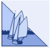

<div class="topbalk">
  <!-- Logo -->

  <div class="logo">
    <a href=""></a>
  </div>

</div>
<div class="menu" kendoRippleContainer>
  <ul>
    <li>
      <a (click)="logout()" class="nav k-button k-bare">Log uit</a>
    </li>
  </ul>
</div>
<div class="inhoud">

  <!-- Verschillende tabstrips om ervoor te zorgen dat je kan kiezen waaruit -->
  <kendo-tabstrip>
    <kendo-tabstrip-tab [title]="'Overzicht cursisten'" [disabled]="true"></kendo-tabstrip-tab>
    <kendo-tabstrip-tab [title]="'Overzicht cursussen'" [disabled]="true"></kendo-tabstrip-tab>
    <kendo-tabstrip-tab [title]="'Overzicht schepen'" [selected]="true">
      <ng-template kendoTabContent>
        <!-- Een grid met de mogelijkheid om items toe te voegen, aan te passen en verwijderen -->
        <div *ngIf="vloot !== undefined">

          <form novalidate #myForm="ngForm">
            <kendo-grid [pageable]="true" [resizable]="true" [sortable]="true"
                        [kendoGridBinding]="vloot"
                        [pageSize]="10"
                        [height]="410"
                        [navigable]="true">
              <ng-template kendoGridToolbarTemplate>
                <button kendoButton *ngIf="!opened" (click)="open()">Add new Schip</button>
              </ng-template>
              <kendo-grid-column field="NUMMER" editor="numeric" title="Nummer">
                <ng-template kendoGridEditTemplate let-dataItem="dataItem">
                  <input [(ngModel)]="dataItem.NUMMER" [disabled]="isNew ? false : true " kendoGridFocusable name="Nummer" class="k-textbox" type="number" required />
                </ng-template>
              </kendo-grid-column>
              <kendo-grid-column field="KLASSE" editor="numeric" title="Klasse">
                <ng-template kendoGridEditTemplate let-dataItem="dataItem">
                  <input [(ngModel)]="dataItem.KLASSE" kendoGridFocusable name="Klasse" class="k-textbox" />
                </ng-template>
              </kendo-grid-column>
              <kendo-grid-column field="NAAM" title="Naam">
                <ng-template kendoGridEditTemplate let-dataItem="dataItem">
                  <input [(ngModel)]="dataItem.NAAM" kendoGridFocusable name="Naam" class="k-textbox" />
                </ng-template>
              </kendo-grid-column>
              <kendo-grid-column field="AVERIJ" editor="boolean" title="Averij">
                <ng-template kendoGridEditTemplate let-dataItem="dataItem">
                  <input [(ngModel)]="dataItem.AVERIJ"
                         name="Averij"
                         type="checkbox" />
                </ng-template>
              </kendo-grid-column>
              <kendo-grid-column field="SOORTCODE" editor="numeric" title="Soortcode">
                <ng-template kendoGridEditTemplate let-dataItem="dataItem">
                  <input [(ngModel)]="dataItem.SOORTCODE"
                         kendoGridFocusable
                         name="Soortcode"
                         required
                         min="1"
                         max="3"
                         class="k-textbox"
                         type="number" />
                </ng-template>
              </kendo-grid-column>
              <kendo-grid-command-column title="command" width="220">
                <ng-template kendoGridCellTemplate let-dataItem="dataItem">
                  <button (click)="edit(dataItem)" type="button" class="k-button">Edit</button>
                  <button (click)="verwijdergegeven(dataItem.NUMMER)" type="button" class="k-button">Remove</button>
                </ng-template>
              </kendo-grid-command-column>
            </kendo-grid>
          </form>
        </div>
      </ng-template>

    </kendo-tabstrip-tab>
  </kendo-tabstrip>
</div>
<app-footer></app-footer>

<p *ngIf="dataSaved">Data has been saved</p>
<kendo-window title="Schip toevoegen" *ngIf="opened" (close)="close()" [minWidth]="250" [width]="450">

  <form class="k-form">

    <label>
      <span>Nummer schip</span>
      <input [(ngModel)]="NUMMER" [disabled]="NewOrEdit === 'edit'" name="Nummer" type="number" />
    </label>
    <label>
      <span>Klasse schip</span>
      <input [(ngModel)]="KLASSE"
             name="KLASSE"
             required
             min="1"
             max="3"
             class="k-textbox"
             type="number" />
    </label>
    <label>
      <span>Naam schip</span>
      <input [(ngModel)]="NAAM"
             name="Naam" />
    </label>
    <label>
      <span>Averij</span>
      <input [(ngModel)]="AVERIJ"
             name="Averij"
             type="checkbox" />
    </label>
    <label>
      <span>Soortcode</span>
      <input [(ngModel)]="SOORTCODE"
             name="Soortcode"
             required
             min="1"
             max="3"
             class="k-textbox"
             type="number" />
    </label>
    <div class="text-right">
      <button type="button" class="k-button" (click)="close()">Cancel</button>
      <button type="button" *ngIf="NewOrEdit === 'new'" class="k-button k-primary" (click)="submit()">
        Submit
      </button>
      <button type="button" *ngIf="NewOrEdit === 'edit'" class="k-button k-primary" (click)="save()">Opslaan</button>
    </div>
  </form>

</kendo-window>
